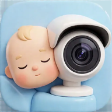

Видеоняня Nestling CameraNestling Camera
Бесплатно превратите Android-телефон в умную видеоняню. Родительскому телефону приложение не нужно — видео открывается в браузере.Turn an Android phone into a smart baby monitor, free of charge. The parent's phone needs no app — the video opens in a browser.
СкачатьDownload
Официальные магазины. Если кнопки нет — публикация в процессе.Official stores. If a button is missing, publishing is in progress.
СкриншотыScreenshots
Фотокарточки из RuStore. Нажмите, чтобы открыть и листать стрелками или свайпом.Cards from RuStore. Tap to open and browse with arrows or swipes.
Как это работаетHow it works
Три шага — и малыш на экране.Three steps and the baby is on your screen.
Любой Android-телефон с камерой и микрофоном. Положите его в детской камерой к малышу, лучше на зарядку.Any Android phone with a camera and microphone. Put it in the nursery with the camera facing the baby, ideally on a charger.
iPhone, планшет, ноутбук — любое устройство с браузером в той же Wi-Fi сети. До 2 зрителей одновременно.iPhone, tablet, laptop — any device with a browser on the same Wi-Fi network. Up to 2 viewers at the same time.
Качество, ночное видение, фото, полноэкранный режим — прямо из окна просмотра. Кнопка «Новый код» мгновенно отключает всех.Quality, night vision, photos, fullscreen mode — straight from the viewer. The "New code" button instantly disconnects everyone.
ВозможностиFeatures
Всё, что нужно заботливому родителю.Everything a caring parent needs.
Немного технических деталейA few technical details
Это не медицинское устройство и не замена присмотру. Реклама Яндекс РСЯ показывается на экране станции. Подробности — в политике и условиях.This is not a medical device and not a substitute for supervision. Yandex ads are shown on the station's screen. Details — in the privacy policy and terms.